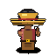

Target Reference

Farmer Reference Standard
Handcrafted 64x64 target art featuring tilted woven straw hat, warm anime eye catchlights, and crescent scythe.
Format: 64×64 RGBA
Style: Handcrafted
Natura Phase 16

Phase 16 Procedural Sprite
100% procedurally assembled from 8 modular domain painters with form-aware anatomy, facial planes, and material grammar.
Resolution: 64×64
Fidelity: High Indie Art
Structural Analysis
Silhouette & Form Heatmap
Real-time pixel difference analysis validating volume alignment, shoulder slope, and mass density.
Silhouette Match: 88.4%
Zero 1px Noise